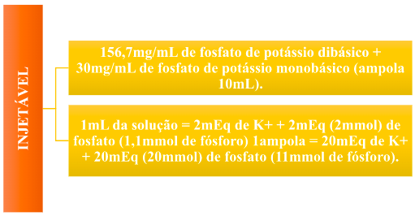
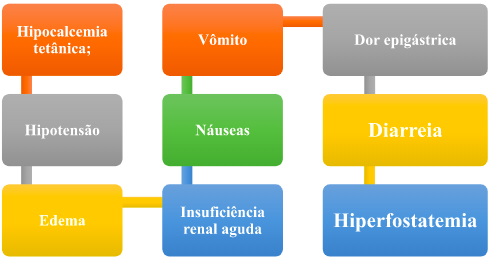
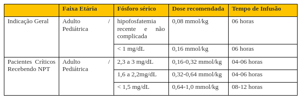
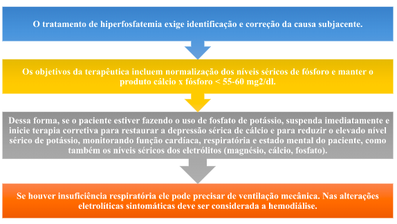

Fosfato – Fosfato de potássio
Sumário:
- Apresentação da droga
- Indicação
- Via de administração
- Preparo/diluição
- Administração
- Incompatibilidade de misturas intravenosas
- Estabilidade/Conservação
- Cuidados específicos e monitoramento
- Reações adversas
- Toxicologia
- Contraindicação
- Uso durante a gestação
- Uso durante a lactação
- Hipofosfatemia
- Hiperfosfatemia
Fosfato de potássio
Apresentação da droga
Indicação
Tratamento e prevenção de hipofosfatemia.
Via de Administração
Endovenosa (somente administrar o medicamento após diluição).
Preparo / Diluição
Diluição em SF 0,9%, SG 5% e SGF. Volume sugerido: 250mL
Velocidade de Infusão
ADULTO
- O tempo de infusão depende da dose a ser administrada, cada ampola deve ser infundida em 2 ou mais horas. Se administrar por acesso venoso central, a taxa de infusão máxima é de 1 ampola (10mL) em 1h20min.
PEDIATRA
- A taxa de perfusão não deve exceder a 0,2mmol/kg/hora.
Incompatibilidade de misturas intravenosas
Não administrar na mesma bolsa ou mesma linha (em Y), solução de fosfato de potássio com solução de sais de cálcio, devido ao risco de formação de precipitado.
Estabilidade / Conservação
Após a diluição, a solução deve ser utilizada em 24 horas.
Cuidados específicos e monitoramento

Situações que exigem atenção especial: Pacientes com hipercalemia, insuficiência renal, doenças cardíacas, alcalose ou acidose metabólica e pacientes digitalizados.
Durante a reposição de fosfato é recomendado avaliar os níveis de cálcio, magnésio, fósforo e potássio a cada 6h.
Reações adversas
Toxicologia
- As manifestações mais relevantes da hipercalemia/hiperfosfatemia são: náusea/vômito, dor abdominal, diarréia, alteração do estado mental, fraqueza, desidratação, hipernatremia e hipotensão.
- Altas concentrações plasmáticas de potássio podem ser fatais, devido a depressão cardíaca e arritmias.
Contraindicação
Hipoparatireoidismo
Hiperfosfatemia
Hipercalemia
Doenças cardíacas
Doença de Addison
Desidratação aguda
Queimaduras severas
Miotonia congênita
Hipocalemia tetânica
Urolitíase
Insuficiência renal severa (menos de 30% da função renal normal)
Infecções do trato urinário causada por organismos desdobradores de ureia
Fibrilação ventricular
Hiperadrenalismo associado à síndrome adrenogenital
Cãimbras severas
Sensibilidade aumentada ao potássio como em adinamia (debilidade geral) hereditária ou paramiotonia congênita
Uso durante a gestação

Categoria C: Não há estudos suficientes para avaliar a segurança do medicamento durante a gravidez. O medicamento deve ser administrado apenas se o benefício potencial justificar o risco.
Uso durante a Lactação
Não há restrições.
Hipofosfatemia
Definição
Caracteriza-se por concentração plasmática de fosfato < 2,5 mg/dL (0,81 mmol/L).
Causas
Perdas urinárias
Diminuição na absorção intestinal ou aumento na utilização
Alcoolismo
Queimaduras
Sinais e Sintomas
Tratamento
Não há estudo prospectivo acerca de reposição de fosfato em crianças. As recomendações posológicas embasadas no peso para adultos devem ser aplicadas com cautela em pacientes pediátricos.
- Em nutrição parenteral:
- Adulto: 20-40mmol (2 ampolas/ 24 horas).
- Pediatria: > 50kg, considerar dose de adulto; < 50kg: 0,5-2,0mmol de fosfato/kg/ 24horas.
- Atentar-se ao potássio sérico do paciente, se > 4,0mEq/L considerar reposição de fosfato por outros sais (glicerofosfato de sódio).
Hiperfosfatemia
Definição
Caracteriza-se pela concentração plasmática de fosfato > 4,5 mg/dL (> 1,46 mmol/L).
Causas
Insuficiência renal
Hipoparatireoidismo
Acidose metabólica ou respiratória
Aumento na ingestão na dieta ou destruição de células do corpo, liberando fosfato para o sangue
Sinais e Sintomas
Tratamento
METABOLISMO DO FOSFATO: https://www.youtube.com/watch?v=SHOzLVPpjks